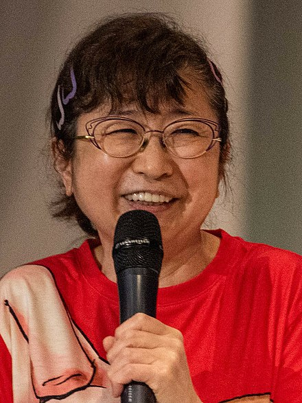

| Role | Epithet | Fictional Characters | Bounty | Voice Actors | ||
|---|---|---|---|---|---|---|
| The Captain | Straw Hat Luffy | Monkey D Luffy | 3,000,000,000 Belly | Mayumi Tanaka |  | |
| Swordsman | Pirate Hunter Zoro | Roronoa Zoro |  |
1,111,000,000 Belly | Kazuya Nakai | |
| Navigator | Cat Burglar Nami | Nami |  |
366,000,000 Belly | Akemi Okamura | |
| Sniper | God Usopp | Usopp | 
|
500,000,000 Belly | Kappei Yamaguchi | |
| Cook | Black Leg Sanji | Vinsmoke Sanji | 1,032,000,000 Belly | Hiroaki Hirata | ||
| Doctor | Cotton Candy Lover Chopper | Tony Tony Chopper | 
|
1000 Belly | Ikue Otani | |
| Archaeologist | Devil Child Robin | Nico Robin | 
|
930,000,000 Belly | Yuriko Ymaguchi | |
| Shipwright | Cyborg Franky | Franky | 394,000,000 Belly | Kazuki Yao | ||
| Musician | Soul King Brook | Brook | 
|
383,000,000 Belly | Yūichi Nagashima / Chō | |
| Helmsman | Knight Of The Sea Jinbe | Jinbe | 
|
1,100,000,000 Belly | Katsuhisa Hōki |
Monkey D. Luffy, also known as "Straw Hat Luffy" and commonly as "Straw Hat",[10] is the founder and captain of the increasingly infamous and powerful Straw Hat Pirates, as well as the most powerful of its top fighters.[26][27] He desires to find the legendary treasure left behind by the late Gol D. Roger and thereby become the Pirate King,[28] which would help facilitate an unknown dream of his that he has told only to Shanks, his brothers, and crew.[29][30] He believes that being the Pirate King means having the most freedom in the world.[31]
Born in Foosha Village, Luffy is the son of Monkey D. Dragon, the leader of the Revolutionary Army,[32] and the grandson of the Marine hero Monkey D. Garp,[33] where their family carries the initial of D. At age 7, Luffy accidentally ate the Gomu Gomu no Mi, which turned his body into rubber.[34] Shanks also gave Luffy the very straw hat that has become Luffy's signature accessory, having gifted it to the boy as part of a promise for them to meet again someday after he became a great pirate.[35] Growing up on Dawn Island under the care of Curly Dadan,[36] Luffy befriended and became sworn brothers of the late "Fire Fist" Portgas D. Ace[37] and Revolutionary Chief-of-Staff Sabo.[38]
Roronoa Zoro,[20] also known as "Pirate Hunter" Zoro,[9] is a main combatant of the Straw Hat Pirates, one of their two swordsmen, one of the Senior Officers of the Straw Hat Grand Fleet,[4] and is publicly recognized as the right-hand man of his crew's captain Monkey D. Luffy.[21][22] Formerly a bounty hunter,[6] he is the second member of Luffy's crew and the first to join it, doing so in the Romance Dawn Arc.[2]
Born in the East Blue, Zoro is the son of Tera and Roronoa Arashi, the grandson of Shimotsuki Furiko and Roronoa Pinzoro, and the grandnephew of Shimotsuki Ushimaru, making him a descendant of both the Shimotsuki Family of Wano Country and the legendary samurai, Shimotsuki Ryuma.[3][11] As a master of Three Sword Style, a swordsmanship style which he created during his childhood training in Shimotsuki Village, Zoro is one of the three most powerful combatants of the Straw Hats, alongside Luffy and Sanji, who are referred to as the "Monster Trio".[23][24] His dream is to become the greatest swordsman in the world, in order to honor a promise he made to his deceased childhood friend Kuina.[25]
"Cat Burglar" Nami[11] is the navigator of the Straw Hat Pirates and one of the Senior Officers of the Straw Hat Grand Fleet.[4] She is the third member of the crew and the second to join, doing so during the Orange Town Arc.[19] She is the adoptive sister of Nojiko after the two were orphaned and taken in by Bell-mère.
She was formerly a member of the Arlong Pirates and initially joined the Straw Hats so that she could rob them in order to buy back her village from Arlong. However, she legitimately joined the Straw Hats after they rebelled against and defeated Arlong. Her dream is to make a map of the entire world.[20]
"God" Usopp[9] is the sniper of the Straw Hat Pirates and one of the Senior Officers of the Straw Hat Grand Fleet.[2] He is the fourth member of the crew and the third to join, doing so at the end of the Syrup Village Arc. Although he left the crew during the Water 7 Arc, he rejoined at the end of the Post-Enies Lobby Arc.[16]
Usopp is the son of Yasopp and Banchina. He was born and raised in Syrup Village, serving as "captain" of the Usopp Pirates and being Kaya's close friend. After working with the Straw Hats to defeat Kuro and the Black Cat Pirates, he was invited to join the crew. Despite his usual cowardice, Usopp dreams of becoming a brave warrior of the sea just like his father and lives every day in pursuit of living up to this dream.
"Black Leg" Sanji,[12] born as Vinsmoke Sanji,[21][22][23] is the cook of the Straw Hat Pirates and one of the Senior Officers of the Straw Hat Grand Fleet.[5] He is the fifth member of the crew and the fourth to join, doing so at the end of the Baratie Arc.
Born as the third son and fourth child of the Vinsmoke Family[24] (thus, making him a former prince of the Germa Kingdom), he disowned his family twice, once in his youth and again after reuniting with them as an adult.[25] After fleeing the Vinsmokes as a child, he eventually entered the care of Zeff as the sous chef of the Baratie, where he would remain until he met Monkey D. Luffy, who convinced him to join his crew.
Tony Tony Chopper, also known as "Cotton Candy Lover" Chopper,[6] is the doctor of the Straw Hat Pirates and one of the Senior Officers of the Straw Hat Grand Fleet.[2] He is the sixth member of the crew and the fifth to join, doing so at the end of the Drum Island Arc. He was temporarily forced to join the Foxy Pirates during the Long Ring Long Land Arc, but was quickly returned to Luffy's crew.
Chopper is a reindeer that ate the Hito Hito no Mi, a Devil Fruit that allows its user to transform into a human hybrid at will. He was taught medicine on Drum Island by his two parental figures, Doctors Hiriluk and Kureha. Chopper aims to travel all across the world in the hopes of accomplishing his dream of being able to cure any disease.
Nico Robin,[17] also known by her epithet "Devil Child"[7] and the "Light of the Revolution",[8] is the archaeologist of the Straw Hat Pirates and one of the Senior Officers of the Straw Hat Grand Fleet.[3] She is the seventh member of the crew and the sixth to join, doing so at the end of the Arabasta Arc. She temporarily left the crew during the Water 7 Arc but rejoined during the Enies Lobby Arc.
Born into a family of archaeologists, Robin is the daughter of Nico Olvia and an unknown man. Robin ate the Hana Hana no Mi at a young age, giving her the power to reproduce her body parts (or her entire body) on any surface at will. As the sole survivor of the destroyed West Blue island Ohara, she is currently one of only two people in the world known to have the ability to read and decipher Poneglyphs, a skill which is considered forbidden and threatening to the World Government.
"Iron Man" Franky[7] is the shipwright of the Straw Hat Pirates and one of the Senior Officers of the Straw Hat Grand Fleet.[3] He is the crew's eighth member and the seventh to join, doing so at the end of the Post-Enies Lobby Arc.
Born "Cutty Flam",[18] he chose to go by his nickname of "Franky" until eventually permanently discarding his true name per the request of Iceburg to hide his identity.[19] Originally from the South Blue,[20] Franky was abandoned by his family as a four-year-old, eventually making his way to Water 7. There, he came to be a member of Tom's Workers, until an incident resulted in his body being heavily damaged and requiring him to augment himself into a cyborg. Upon returning to Water 7, he became the leader of the Franky Family, a group of ship dismantlers and bounty hunters.
"Soul King" Brook[10] is the musician of the Straw Hat Pirates, one of their two swordsmen, and one of the Senior Officers of the Straw Hat Grand Fleet.[3] He is the ninth member of the crew and the eighth to join,[16] doing so at the end of the Thriller Bark Arc.
Brook ate the Yomi Yomi no Mi, which allowed him to return to life after death once.[17] Brook eventually learned to tap deeper into the powers of his Devil Fruit, giving him significant control over his own soul and the souls of others.
"Knight of the Sea" Jinbe[1] is the helmsman of the Straw Hat Pirates and one of the Senior Officers of the Straw Hat Grand Fleet.[3] He is the tenth member of the crew and the ninth to join, doing so during the Wano Country Arc.
Jinbe is a whale shark fish-man and a powerful master of Fish-Man Karate. His dream is to fulfill his former captain Fisher Tiger's dying wish of coexistence and equality between humans and fish-men. He was a member of the Sun Pirates, eventually becoming its second captain after the death of their original captain, Tiger.[9] He eventually became one of the Seven Warlords of the Sea, though he resigned during the Summit War of Marineford.[5][9] Vegapunk later cloned Jinbe as one of the Seraphim, S-Shark, to replace the Warlords.